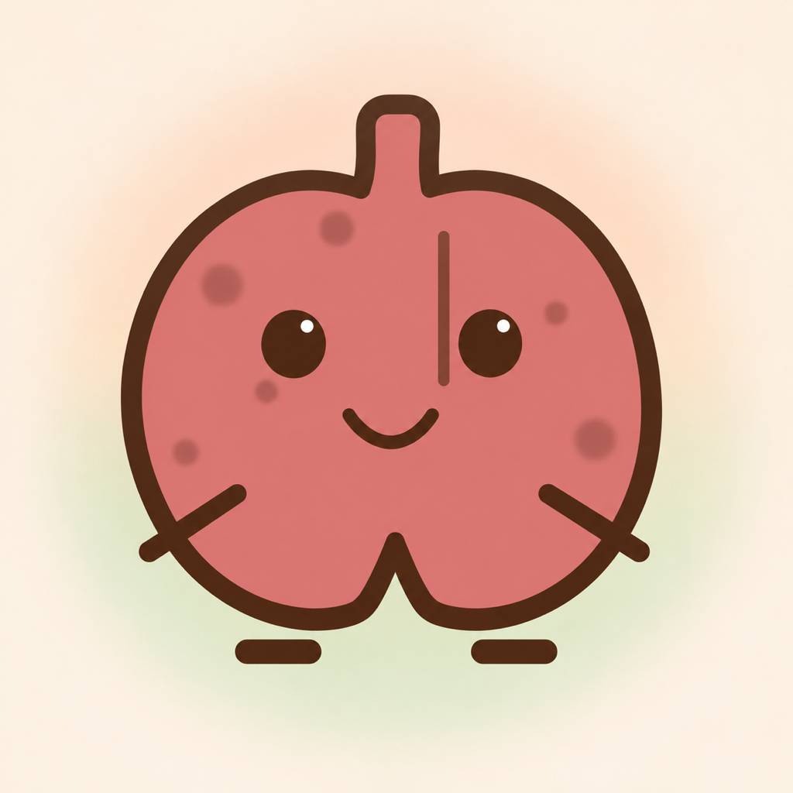

A plan that fits real life
Choose your pace, set your routine and follow a gradual cigarette limit toward your quit day. Calmber can adjust when your days do not go exactly to plan.

CalmberA calmer way to quit smoking
Calmber turns quitting into a gradual, personal journey—with a plan that adapts, a cigarette log that stays honest and a little lung buddy that changes with you.
01 / QUITTING, WITHOUT THE SHAME
Log what really happened, understand the pattern and keep moving. Calmber is designed around recovery—not perfection.
Choose your pace, set your routine and follow a gradual cigarette limit toward your quit day. Calmber can adjust when your days do not go exactly to plan.
Hold to log, correct previous days and see timing, money and patterns without turning the experience into a spreadsheet.
When a craving hits, your lung buddy helps you pause, breathe, delay or ride the urge—then checks in without judgment.
02 / A LUNG BUDDY THAT CHANGES
The lung buddy begins where you begin. Over time it gradually looks clearer, brighter and more at ease—small visual proof that every day counts.
“A small step is still a step.”
03 / YOUR STORY STAYS YOURS
Your smoking logs, cravings, plan, pack price and routine stay in the app’s local storage on your iPhone. Calmber does not require an account or upload that journal to a Kestora Labs server.
Read the Privacy Policy →04 / BEHAVIORAL SUPPORT
Calmber offers behavioral support and is not medical advice, diagnosis or treatment. For withdrawal concerns, cessation medication or a quit plan suited to your health, speak with a qualified healthcare professional.
05 / GOOD TO KNOW
No. Your detailed quitting journal is stored locally on your iPhone.
You can keep logging honestly. Calmber does not lock you out or reset your progress; it uses the day to help you understand and continue.
No. Calmber is behavioral support, not medical advice or treatment. Contact a healthcare professional for medical guidance.
Calmber offers monthly auto-renewable access and a separate one-time lifetime purchase. Apple shows the full localized price before confirmation.
Meet the lung buddy on your side.